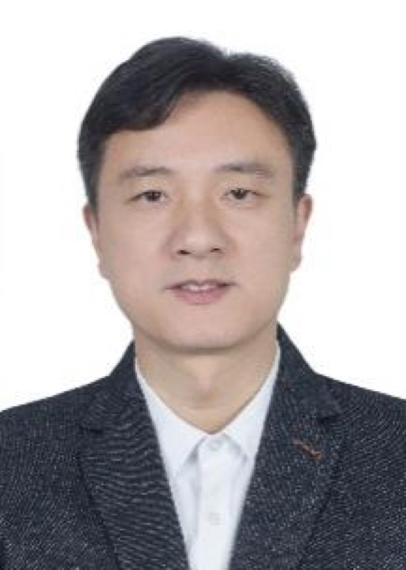
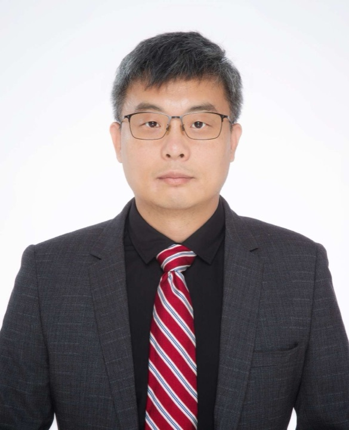
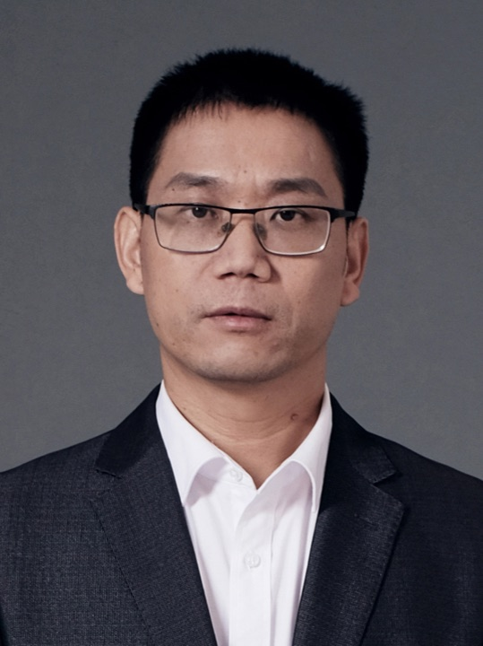
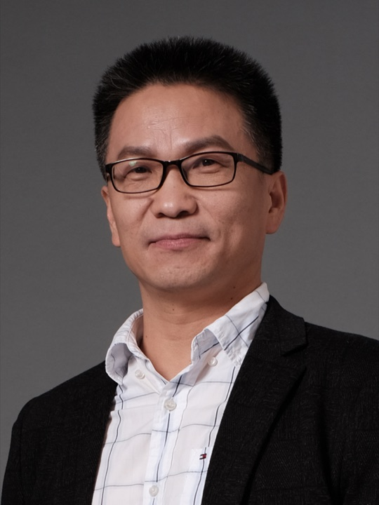
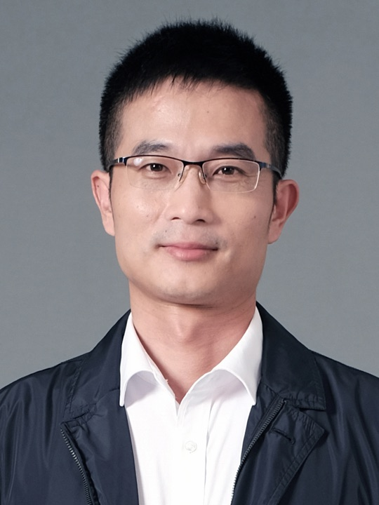
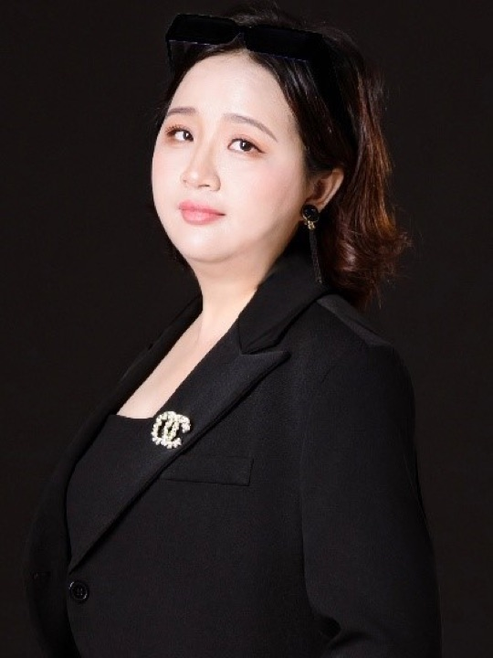
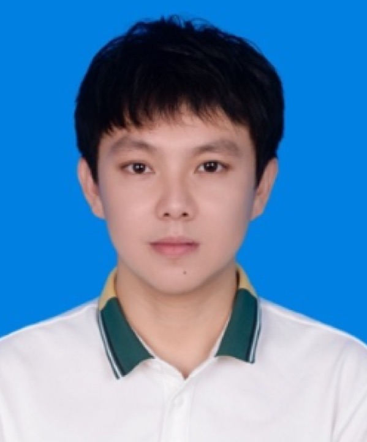
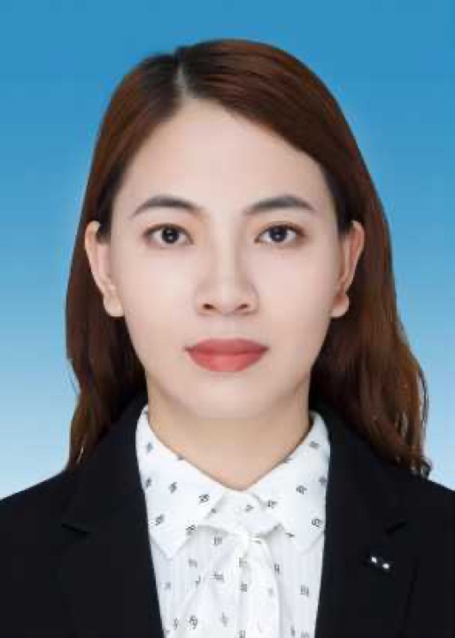

陈毅东
教授
人工智能，自然语言处理，机器翻译，手语翻译，信息抽取，情感分析
汇聚信息科学、电影与数字媒体、建筑与土木工程、人文研究等领域的跨学科力量。
教授
人工智能，自然语言处理，机器翻译，手语翻译，信息抽取，情感分析
教授
基于智能传感服装的人体运动捕捉、分析与交互，具身智能
教授
学习驱动的演化优化和非遗材料数智仿真与设计
教授；博士生导师
机器学习，闽台非遗数字化

教授
绿色建筑的气候响应设计，亚热带滨海城市环境研究，闽台传统建筑谱系研究
教授；博士生导师
自然语言处理，机器翻译，人工智能

教授；博士生导师
自然语言处理，闽台非遗文化大模型

教授
传统聚落保护研究与乡村营建、建筑遗产数字保护、城市设计与城市更新

教授；博士生导师
知识图谱，智能影视科技，非遗文化智能分析

教授；博士生导师
社交机器人，闽台非遗数字化
副教授；硕士生导师
影视 AI 技术（AIGC、智能体）、虚拟现实（AR、VR、XR）、三维动画、数字人、语音翻译与合成。

副教授；博士生导师
计算机视觉，文化遗产三维重建
副教授；硕士生导师
计算机视觉，非遗表演智能感知

副教授；硕士生导师
人机交互、虚拟现实、社交机器人、跨媒体智能、游戏开发。

副教授；硕士生导师
图数据索引与查询、医疗健康大数据分析、大语言模型及其领域应用；知识图谱与问答系统。
助理教授
传统建筑与天文历法、传统营建智慧的当代转译与应用、闽南地域建筑

助理教授
学习驱动的演化优化和非遗材料数智仿真与设计
助理教授
城乡历史文化遗产保护；闽台海洋商贸遗产保护；历史社区更新
助理教授；硕士生导师
自然语言处理、大模型、非结构化数据预训练、语音大模型。
讲师
自然语言理解与生成、多模态机器翻译、语音大模型及可信推理。

助理教授
乡村生活空间转型，乡村人居环境与休闲空间，乡村治理等
传统村落保护与传承